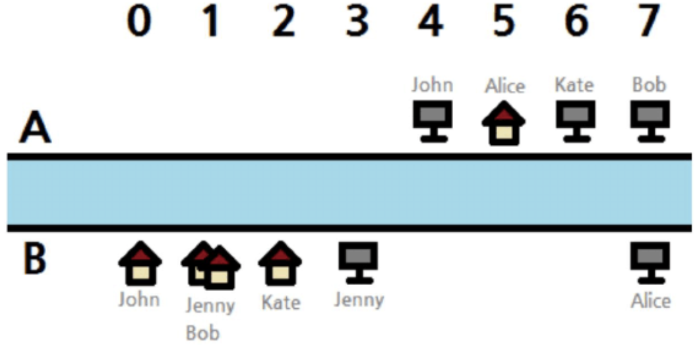
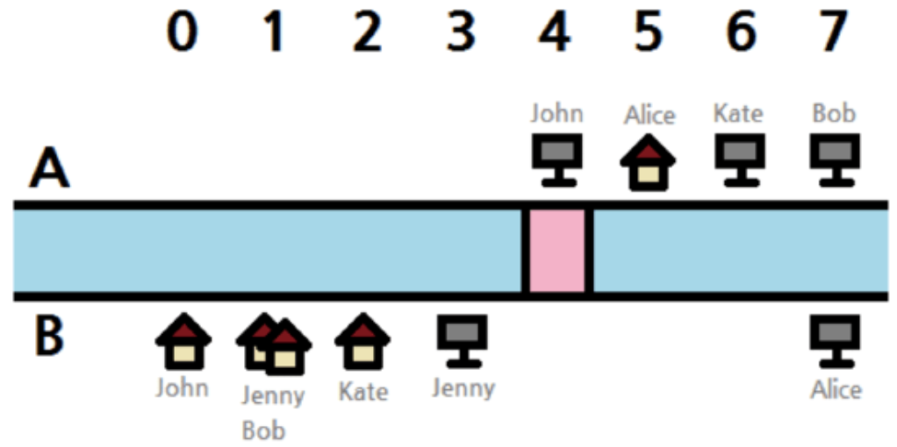
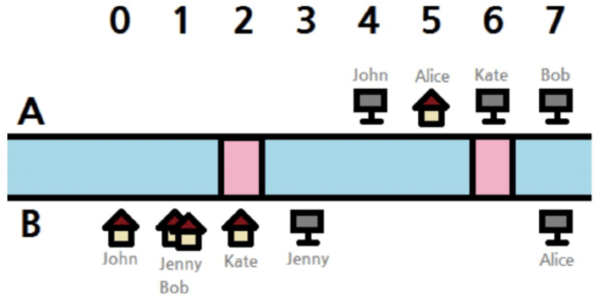

【样例说明】
下图是两个样例输入的图示说明：

下面是样例 1 可能的一组最优方案，粉色的区域表示一座桥。

下面是样例 2 的一组可能是最优方案。

【数据规模和约定】
共有五部分数据（或称5个子任务）。所有数据都保证：$0 \le S_i,T_i \le 1000000000$，$P_i$ 和 $Q_i$ 为字符 $A$ 和 $B$ 中的一个，同一栋建筑内可能有超过 1 间房子或办公室（或二者的组合，即房子或办公室同时大于等于 1）。
第 1 部分数据（测试点 1-11）占8分，数据范围满足：$K=1,1 \le N \le 1000$
第 2 部分数据（测试点 12-21）占14分，数据范围满足：$K=1,1 \le N \le 100000$
第 3 部分数据（测试点 22-33）占9分，数据范围满足：$K=2,1 \le N \le 100$
第 4 部分数据（测试点 34-45）占32分，数据范围满足：$K=2,1 \le N \le 1000$
第 5 部分数据（测试点 46-57）占37分，数据范围满足：$K=2,1 \le N \le 100000$
 Comet OJ
Comet OJ